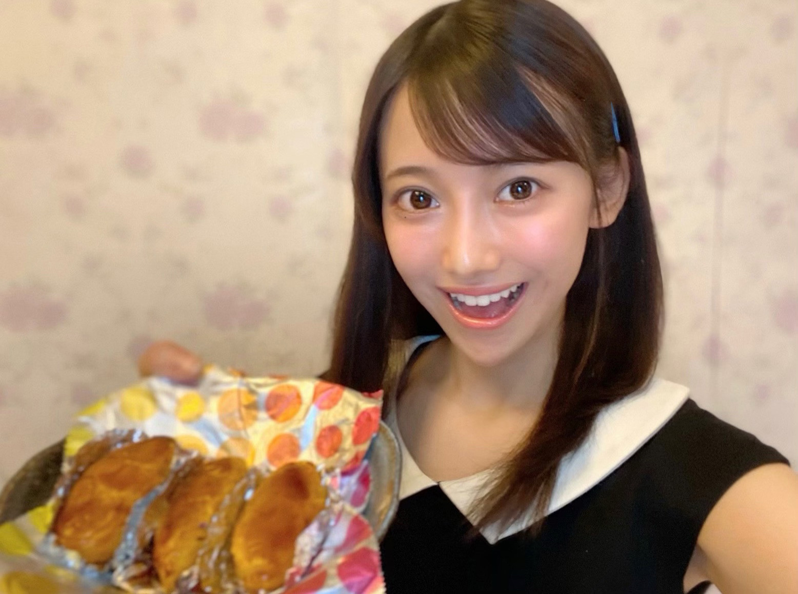

| 2020/05 02 Sat | うれしなみだ ☺︎ 黒見明香 |
みなさま こんにちは✨
ココを見つけてくださり ありがとうございます♪
乃木坂46 新４期生の黒見明香です。
『誰・・・？？』と思われた方も多いことと思います。
２回目もすこーしだけ自己紹介させてくださいませ☺︎
♪:*:･･:*:･･:*:･･:*:･･:*:･･:*:･♪:*:･･:*:･･:*:･･:*:･･:*:･･:*:･♪
黒見 明香（くろみ はるか）
2004年1月19日生まれ 16才
香港生まれ・東京都出身です
黒見ちゃん・くろみん と呼んでくれたら嬉しいです♩
合い言葉 3の倍数9・6・3(くろみ) ！？
♬ 実はプレイ中...(๑˃̵ᴗ˂̵)و
プロ野球スピリッツA⚾️ ウイニングイレブン⚽️
あつまれどうぶつの森:apple.gif: 天地の如く(三国志⚔)
＊ みなさんはどんなゲームが好きですか ？
♪:*:･･:*:･･:*:･･:*:･･:*:･･:*:･♪:*:･･:*:･･:*:･･:*:･･:*:･･:*:･♪

初めてのブログは、ついに皆さんにお話しできるっ((〃ω〃)) という嬉しい気持ちと、こんな拙い文を送って大丈夫かなぁ...という緊張で、一日中ドキドキしていました。
ブログを開いてびっくり！！Σ（ﾟдﾟ）
。
。。。
。。。。。(/ _ ; )
こんなに見ててくださる方がいるなんて、嬉し涙が止まりませんでした。
一つ一つ心の中でお返事しながら、大切に読ませて頂きました。
♬ *。♩*。♬
これも 大好きな乃木坂の先輩方と、ファンの皆さまが築いてこられた、
かけがえのない信頼✨と固い絆だからこそ ( ⸝⸝•ᴗ•⸝⸝ )੭⁾⁾ ですよね✩︎⡱
あたたかなメッセージに、胸がいっぱいです。
時間をつかって、コメント書いてくださり、本当にありがとうございます♡
＊
今すぐにでも、一つ一つお返事させて頂きたくてウズウズしているのですが、
次回から"質問返し"でおしゃべりさせてくださいね☺︎
（ 聞きたいことなどあったら、気軽にコメントして貰えたら嬉しいです♬ ）
♪:*:･･:*:･･:*:･･:*:･･:*:･･:*:･♪:*:･･:*:･･:*:･･:*:･･:*:･･:*:･♪

⭐︎ 配属発表SHOWROOM時の、新4期生での初めての写真です。
自分から"写真とろう"となかなか言い出せないので、私にとって珍しい、大切な一枚です。（撮りかた下手でごめんなさい;;）
♬ *。♩*。♬
配属発表では、秋元真夏さん♡菅井友香さん♡佐々木久美さん♡が、乃木坂46・欅坂46・日向坂46の新しいメンバーを紹介してくださいました。
キャプテンの皆さまは オーラがキラキラしてとても美しくて⭐︎緊張している私たちを優しく見守ってフォローして下さり、本当に心強かったです。
＊
偶然にも "あいうえお順"で一番初めの登場となってしまい、
『果たして トップバッターがちゃんと務まるだろうか...- -;;』
と緊張で手が滑って、ハンカチをずっと握っていました。
マネージャーさんが「最初の"はい"の返事が一番大事だよ」と指導して下さり、
長い廊下の 奥に向かってひたすら、
「はい！」「はいぃー↑」「はいぃ↓」「はぁーい」「はああぃー」ヾ(･ω･)・・・
一生分の「はい」のバージョン練習をしていました汗
・・・その成果は出てたのでしょうか？？謎
♬ *。♩*。♬
坂道研修生として一緒に過ごしてきた大切な仲間と
ついにそれぞれの坂を登っていく時が来たんだ。。。と寂しさもありましたが、
"新メンバーとして少しでもグループに役立てる人になれるよう、
一生懸命頑張ろうね！"と励ましあいました。
＊
ブログを更新すると「読んだよ！」と連絡をくれて
懐かしい気持ちにホッとして、涙がでそうになります。
いまこうやってお互いのブログを読んだり
頑張っている様子を応援できることが とても幸せです☺︎
♪:*:･･:*:･･:*:･･:*:･･:*:･･:*:･♪:*:･･:*:･･:*:･･:*:･･:*:･･:*:･♪

お家での時間が増えたので、不器用ながら
良く食べているさつま芋で スイートポテトを作ったりしました。
（缶切りがうまく使えなくて、缶ごと中身をフッ飛ばす...
フライパンのオムレツを裏返したら、壁に貼り付いた事件...等々）
＊
乃木坂の先輩方はお料理上手な 素敵な女性がたくさんいらっしゃるので、
見習って、少しずつできることが増えたら嬉しいな☺︎
⭐︎最終目標「お家でとびきり美味しいアツアツ小籠包！」
を作れるようになることです・・・ご飯の話はお腹が空きますね ぐぅ... (*ˊᵕˋ*)੭
♬ *。♩*。♬
休校期間に 家にじーっとしていると
"動きたいなぁ、外に出てみたいなぁ..."と色々思い出したりします。
そんな時は、両手でサイリウムを振って一曲歌う（＊コールの方です笑）と
気持ちもスッキリするので
よくコッソリ一人で「うぉーーーハィっ！ハイっ！」と
踊ってテンションを上げています。
＊
良い事があった日も、悲しい事があった日も、
たくさんの大好きな乃木坂の曲と共に過ごしていきたいなと思いました。
♬ *。♩*。♬
✨井上小百合さん ご卒業おめでとうございます。初の乃木坂工事中収録で、緊張で固まっていた私を、柔らかい微笑みでふわーっと溶かして下さいました。あの優しいお顔がずっと心に残っています。これからのご活動も楽しみにさせていただいています☺︎
♪:*:･･:*:･･:*:･･:*:･･:*:･･:*:･♪:*:･･:*:･･:*:･･:*:･･:*:･･:*:･♪
皆さんが今、一日一日大変な中で
なんだかホッとリラックスできたり
クスッと笑えるような何かが書けたらいいな、
と願っています(*´-`)
どうぞお身体大切に お過ごしくださいませ✩︎⡱
初めて会える日を首をながーーくして心待ちにしています♪
＊
長くなってしまい、ごめんなさい。
おっとり可愛い奈於ちゃんに貰ったバトン
明日はメガネ姿も超・絶・かわ・いい璃果ちゃんです！
読んでくださり、本当にありがとうございます☺︎
次回質問返しも、読んでくれたら嬉しいなぁ✨
またねヾ(･ω･*)
くろみはるか☺︎
☆ 本日のあなたのラッキーナンバー：９
♪:*:･･:*:･･:*:･･:*:･･:*:･･:*:･♪:*:･･:*:･･:*:･･:*:･･:*:･･:*:･♪
コメント(720)
2020/05/02 14:18
コメント(720)
プロスピリアタイ希望です！！
ブログ更新ありがとう！
心がこもった文章で読んでいで気持ちが癒されます
写真もすごく可愛いよ！
早く握手会とかで会いたいね
大変だと思うけど頑張って！
まだたった2回の更新ですが、文章がお上手ですね。
日々の何気ない出来事を、
工夫して面白く書かれていて素晴らしいと思います。
それから自撮りもお上手だと思います(笑)
目が大きいので、写真映えされますね。
山のように質問が来ているかと思いますが、
無理なさらずご自分のペースで。
歯痒い日が続くかも知れませんが、
私も含めファンは変わらず応援しています。
こんな時期ですが少しでも良い時間を過ごせます様、
陰ながら願っております。
ブログの更新ありがとうございます！
配属発表のとき、黒見ちゃんが1番最初に呼ばれて
ハキハキ話してたのがとても印象に残ってます！
かっこよかったです⭐︎
私も16歳で同い年なのですが、
黒見ちゃんはかわいくて大人っぽくて羨ましいです！
いつも元気をもらってます！
これからもがんばってください！
応援してます！！
「はい！」の練習するのめっちゃわかる！俺も卒業式で呼ばれるちょっと前に口パクで練習してた笑
スイートポテトすごい！おいしそう！作り方教えて欲しい！！可愛くて料理できるのは最強だね！笑
おれも自粛生活で料理はまって、この前生チョコケーキ作ったよ！！
黒見ちゃんと会える日を楽しみにしてます！
〜質問〜
1.仲良くなった先輩はいますか？
2.ヨサコイって知ってますか？知ってたらどんなイメージか教えてほしい！！
文章まとまりなくてごめんね！！
はるかちゃんのブログやっぱ好きよ〜好きだよ〜！
加入showroom懐かしいね〜、見てたら乃木坂の配属がみんな可愛くて嬉しかった記憶ある！
ゲームあんましないんですよね
漫画とかもあんま読まないんだけど唯一キングダムだけ読んでる！
はるかちゃんはキングダム読む〜？？
後、はるかちゃんはスポーツとか見ますか？
僕はバスケが好きでアメリカのNBAっていうプロリーグを見るんです(です)
またはるかちゃんの事いっぱい教えてね！
じゃあ体に気をつけて！
同い年の女子です！
質問です！
同い年からはなんて呼ばれたいですか？？！
先輩とのメピソードありますか？？！
プロスピ やってらっしゃるんですね
好きな選手とかいますか？
私のこと覚えてくれてたら嬉しい…！
くろみんのスイートポテト食べてみたいなぁ笑
食べれたら人生もう満足だよ〜
オススメの手作り料理教えて欲しい！
くろみんと同じもの作りたいな〜ﾆｺﾆｺ
また更新待ってるね！
黒見ちゃんはどこの球団のファンや好きな選手はいますか？
エネルギーを沢山蓄えて 頑張って
前回同様でまた素敵だ。
やはり明香ちゃんの魅力は
変わらないな(*^^*)
そんな明香ちゃんが僕に力をくれる。
だから僕も頑張れる(^o^)
体調に気を付けてお互いに頑張ろ(^o^)
アチョー‼┌(`Д´)ノ
個性を伸ばしてガンバだよ
早速質問してみようかな？
『仲良しになりたい先輩は誰？』
よろしくねぇ
名古屋のおっちゃんでした ✨
ブログ更新お疲れ様です！
いい仲間に出会えてよかったね！
それだけ！ばいばい！
しつもーん！プロスピでお気に入りの選手は？？
また更新楽しみにしてるね！
質問です！
私もプロ野球スピリッツAやってるんですが、どのチームでプレーしてますか？
あとお気に入りの選手は誰ですか？
コメントする